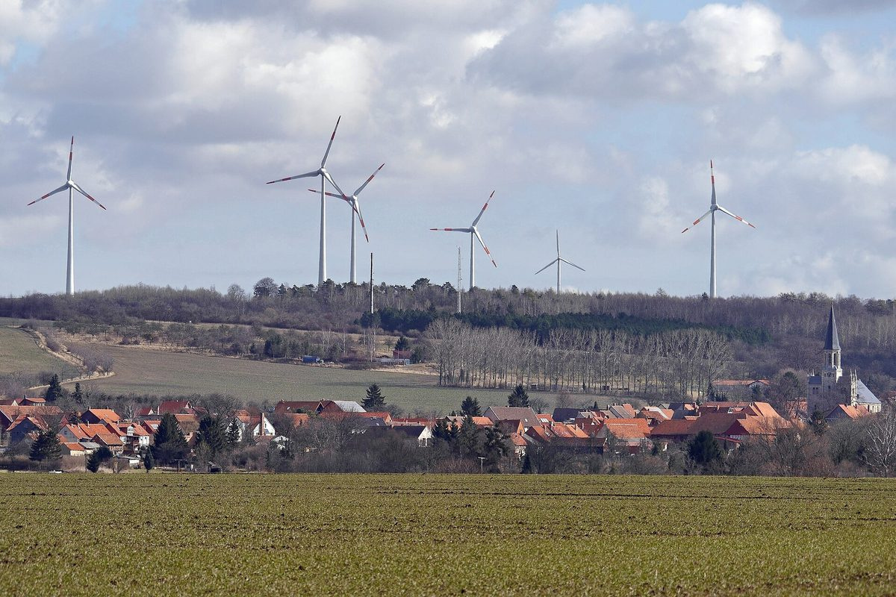

독일 주민 700여 명 마을 다르데스하임, 풍력 수익 1% 마을 사업에 쓰고 리파워링 땐 주민협동조합이 지분 51%…440만 유로 목표에 670만 유로 몰려

연 1억5,000만kWh로 주민 소비량의 약 100배 만드는 30년 풍력 마을, 바람 많은 해 마을 몫 10만 유로…마을 3곳 주민 200여 명 조합 가입, 이익 공유를 산업·일자리로 잇는 일은 과제
주민 700여 명이 사는 독일 중부 마을 다르데스하임이 30년 넘게 풍력발전을 이어 오며 해마다 수익의 1%를 마을 숙원사업에 쓰고, 낡은 풍력기를 바꾸는 리파워링에서는 주민협동조합이 지분의 과반을 갖기로 했다. 마을 뒤 높이 200m가 넘는 풍력기들이 한 해 1억5,000만kWh를 만드는데 이는 주민 소비량의 약 100배이며, 한 주민은 전기차로 100km를 달리는 데 5유로(약 7,400원)면 충분하다고 했다. 랄프 포이크트 시장은 바람이 많은 해에는 이 마을 몫이 10만 유로(약 1억4,700만 원)까지 늘어 유치원과 지역 단체를 돕고 도로를 고치는 데 쓴다고 설명했다. 발전량을 두 배로 늘리는 리파워링에서는 새 풍력기 자본의 절반을 주민협동조합으로 마련하고 주요 의사결정에도 주민이 참여하며, 다르데스하임 등 마을 3곳 주민 200여 명이 조합에 가입해 투자액이 100억 원에 가까워졌다. 발전사업자 대표 하인리히 바르텔트는 주민 지분 51%에 440만 유로가 필요했는데 6개월 모집에 목표보다 230만 유로 많은 670만 유로가 들어왔다고 밝혔고, 사업자는 큰 변수가 없으면 약 1,500만 원을 넣은 주민에게 20년 동안 약 6,000만 원을 배당할 계획이라고 했다. 다만 바르바라 프레토리우스 HTW 베를린대 교수는 "전기요금 인하만으로 지역경제를 발전시킬 수는 없다"며 기반시설과 교육시설을 함께 갖추려는 정책 의지가 필요하다고 지적했다.
시민에너지 관점
다르데스하임의 주민 몫은 투자하지 않은 주민까지 누리는 수익 1% 마을 기금과, 돈을 낸 주민이 가진 협동조합 지분 51%라는 두 겹으로 짜여 있다. 시골 마을 주민이 큰돈을 모을 수 있겠느냐는 의문이 나올 수 있지만, 마을 3곳 주민 200여 명이 목표보다 230만 유로를 더 내놓은 것은 30년 동안 혜택을 눈으로 확인한 주민이 기꺼이 주인이 되려 한다는 것을 보여 준다. 수익을 나눠 받는 데서 그치지 않고 지분과 의사결정권을 함께 가질 때 풍력기는 마을이 지키는 자산이 되고, 리파워링 같은 다음 투자도 주민 손으로 결정된다. 국내 풍력·태양광 사업도 처음 설계할 때부터 모든 주민에게 돌아가는 마을 기금과 주민 조합이 과반을 가질 수 있는 지분 구조를 함께 넣어야 한다.
출처: 포항MBC 2026-10-29 이도은 원문 보기
住民700人余りのドイツ・ダルデスハイム、風力収益の1%を村の事業に…リパワリングでは住民協同組合が持ち分51%、目標440万ユーロに670万ユーロが集まる
年1億5,000万kWhと住民消費量の約100倍を生む30年の風力の村、風の強い年は村の取り分10万ユーロ…3村の住民200人余りが組合に加入、利益の共有を産業・雇用につなげるのは課題
住民700人余りが暮らすドイツ中部の村ダルデスハイムは、30年以上にわたり風力発電を続け、毎年収益の1%を村の懸案事業に充ててきたうえ、古い風車を建て替えるリパワリングでは住民協同組合が持ち分の過半を持つことになった。村の背後に立つ高さ200mを超える風車群は年間1億5,000万kWhを発電し、これは住民の消費量の約100倍にあたる。ある住民は、電気自動車で100km走るのに5ユーロ（約7,400ウォン）あれば足りると話した。ラルフ・フォイクト村長は、風の強い年にはこの村の取り分が10万ユーロ（約1億4,700万ウォン）まで増え、幼稚園や地域団体の支援、道路の補修に使っていると説明した。発電量を2倍に増やすリパワリングでは、新しい風車の資本の半分を住民協同組合で調達し、主要な意思決定にも住民が加わる。ダルデスハイムなど3村の住民200人余りが組合に加入し、出資額は100億ウォン近くに達した。発電事業者代表のハインリッヒ・バルテルト氏は、住民が持ち分51%を確保するには440万ユーロが必要だったが、6か月の募集で目標を230万ユーロ上回る670万ユーロの申し込みがあったと明らかにし、事業者は大きな変動がなければ約1,500万ウォンを出資した住民に20年間で約6,000万ウォンを配当する計画だとした。一方、HTWベルリン大学のバルバラ・プレトリウス教授は「電気料金の引き下げだけで地域経済を発展させることはできない」と述べ、インフラや教育施設を併せて整える政策的な意思が必要だと指摘した。
市民エネルギーの視点
ダルデスハイムの住民の取り分は、出資していない住民も受け取れる収益1%の村の基金と、出資した住民が持つ協同組合の持ち分51%という二重の仕組みになっている。農村の住民が大金を集められるのかという疑問もあり得るが、3村の住民200人余りが目標より230万ユーロも多く出したことは、30年間その恩恵を目の当たりにしてきた住民が進んで持ち主になろうとしていることを示している。収益の分配を受けるだけでなく、持ち分と意思決定権をともに持つとき、風車は村が守る資産となり、リパワリングのような次の投資も住民の手で決まる。韓国の風力・太陽光事業も、最初の設計段階から、すべての住民に還元される村の基金と、住民組合が過半を持てる持ち分構造を併せて組み込むべきだ。
出典: 浦項MBC 2026-10-29 イ・ドウン 原文を読む
德国700余人小村达德斯海姆把风电收益的1%用于村庄项目…更新改造时居民合作社持股51%，440万欧元目标吸引670万欧元认购
年发电1.5亿千瓦时、约为居民用电量100倍的30年风电村，多风年份村庄份额达10万欧元…3个村200余名居民加入合作社，把收益共享转化为产业和就业仍是课题
居民700余人的德国中部村庄达德斯海姆（Dardesheim）30多年来坚持风力发电，每年把收益的1%用于村里期盼已久的项目；在更换旧风机的更新改造（repowering）中，居民合作社将持有过半股份。村后高度超过200米的风机每年发电1亿5,000万千瓦时，约为居民用电量的100倍；一位居民说，开电动车跑100公里只需约5欧元（约合7,400韩元）。村长Ralf Voigt介绍说，多风的年份这笔村庄份额可增至10万欧元（约合1亿4,700万韩元），用于资助幼儿园和地方团体、修缮道路。在发电量翻番的更新改造中，新风机一半的资本将通过居民合作社筹集，居民也参与主要决策；达德斯海姆等3个村的200余名居民已加入合作社，投资额接近100亿韩元。发电企业负责人Heinrich Bartelt表示，居民持股51%需要440万欧元，经过6个月招募，认购额达到670万欧元，比目标多出230万欧元；企业还表示，若无重大变数，投资约1,500万韩元的居民在20年内可获约6,000万韩元分红。不过，柏林应用技术大学（HTW Berlin）教授Barbara Praetorius指出：“仅靠降低电费无法发展地方经济”，还需要同时完善基础设施和教育设施的政策意愿。
市民能源视角
达德斯海姆居民的份额由两层构成：未出资的居民也能享受的收益1%村庄基金，以及出资居民持有的合作社51%股份。有人可能怀疑农村居民能否筹到大笔资金，但3个村的200余名居民比目标多拿出230万欧元，说明30年来亲眼看到好处的居民乐于成为主人。不止于分享收益，而是同时拥有股份和决策权，风机才会成为村庄守护的资产，像更新改造这样的下一轮投资也由居民亲手决定。韩国的风电和光伏项目也应从最初设计起，同时纳入惠及全体居民的村庄基金和让居民合作社可持有过半股份的股权结构。
来源: 浦项MBC 2026-10-29 Lee Do-eun 查看原文
German village of Dardesheim, home to about 700 people, puts 1% of wind income into village projects and gives a residents' co-op 51% of its repowered turbines; a 4.4 million euro target drew 6.7 million euros
A 30-year wind village producing 150 million kWh a year, about 100 times what residents use, sees its village share reach 100,000 euros in windy years; some 200 residents of three villages have joined the co-op, while turning shared profits into industry and jobs remains a challenge
Dardesheim, a village of about 700 people in central Germany, has run wind power for more than 30 years and spends 1% of the income each year on long-awaited village projects, and in repowering its old turbines it has agreed that a residents' cooperative will hold a majority stake. The turbines behind the village, more than 200 metres tall, generate 150 million kWh a year, about 100 times what residents consume, and one resident said 5 euros (about 7,400 won) is enough to drive an electric car 100 km. Mayor Ralf Voigt said the village share rises to as much as 100,000 euros (about 147 million won) in windy years and goes to kindergartens, local groups and road repairs. In the repowering, which is meant to double output, half the capital for the new turbines is being raised through the residents' cooperative and residents take part in major decisions; some 200 people from three villages, including Dardesheim, have joined, with investment approaching 10 billion won. Heinrich Bartelt, head of the developer, said residents needed 4.4 million euros to secure a 51% stake and that six months of fundraising drew 6.7 million euros, 2.3 million more than the target, and the developer said that, barring major surprises, a resident investing about 15 million won would receive about 60 million won in dividends over 20 years. Barbara Praetorius, a professor at HTW Berlin, cautioned that "cheaper electricity alone cannot develop the local economy," saying policy commitment is also needed to build infrastructure and education facilities.
Citizen Energy View
The residents' share in Dardesheim has two layers: a village fund of 1% of income that benefits even those who have not invested, and a 51% cooperative stake held by those who have. Some may doubt that rural residents can raise large sums, but the fact that about 200 people from three villages offered 2.3 million euros more than the target shows that residents who have seen the benefits for 30 years are willing to become owners. When residents hold equity and a say in decisions rather than merely receiving a cut of the profits, the turbines become an asset the village protects, and the next investment, such as repowering, is decided in residents' hands. Wind and solar projects in Korea should likewise build in, from the very first design, both a village fund that reaches every resident and an ownership structure in which a residents' cooperative can hold a majority.
Source: Pohang MBC 2026-10-29 Lee Do-eun Read the original